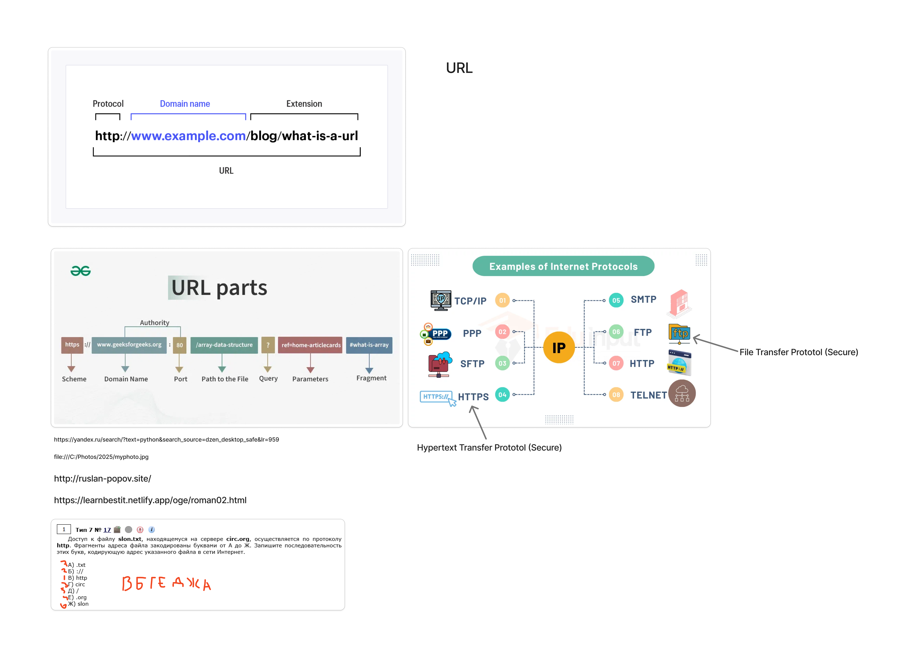

Урок 6
- Разбирали устройство адресов в Интернет (тема Цифровая грамотность)
- решали задание 6 ОГЭ
Доска урока

Домашнее задание
Для более глубокого изучения, познакомься с терминологией:
🌐 URL (Унифицированный указатель ресурса)
| Термин |
Объяснение (на русском) |
| Scheme / Protocol |
Протокол доступа (например, http, https). |
| Host |
Хост — доменное имя или IP-адрес сервера. |
| Port |
Порт — номер, указывающий "вход" на сервере (например, :80, :443). |
| Path |
Путь к ресурсу на сервере (например, /index.html). |
| Query String |
Строка запроса — параметры, передаваемые после ?. |
| Fragment |
Фрагмент — якорь внутри страницы (#section). |
| Base URL |
Базовый URL без параметров и якорей. |
| Absolute URL |
Полный URL, включая схему, домен и путь. |
| Relative URL |
Относительный URL относительно базового. |
🌍 Доменные имена
| Термин |
Объяснение (на русском) |
| DNS (Domain Name System) |
Система перевода доменов в IP-адреса. |
| TLD (Top-Level Domain) |
Домен верхнего уровня, например, .com, .ru. |
| Second-Level Domain |
Основная часть домена, например, google в google.com. |
| Subdomain |
Поддомен — дополнительный уровень, например, mail.google.com. |
| FQDN (Fully Qualified Domain Name) |
Полное доменное имя, включая все поддомены. |
| Registrar |
Компания, у которой регистрируют доменные имена. |
| WHOIS |
Сервис получения информации о владельце домена. |
🖧 Интернет-адреса
| Термин |
Объяснение (на русском) |
| IP Address (IPv4/IPv6) |
Уникальный сетевой адрес устройства. |
| Public IP |
Публичный IP — доступен из Интернета. |
| Private IP |
Частный IP — используется внутри локальной сети. |
| Dynamic IP |
IP-адрес, который может меняться. |
| Static IP |
Постоянный IP-адрес. |
| MAC Address |
Аппаратный адрес сетевой карты устройства. |
📡 Сетевые протоколы
| Термин |
Объяснение (на русском) |
| HTTP / HTTPS |
Протоколы передачи веб-страниц (HTTPS — с шифрованием). |
| FTP / SFTP |
Протоколы передачи файлов (SFTP — защищённый). |
| TCP / IP |
Базовые протоколы Интернета. |
| UDP |
Протокол без установления соединения (быстрый, но ненадёжный). |
| DNS |
Протокол для разрешения доменных имен. |
| DHCP |
Протокол автоматической выдачи IP-адресов. |
| SMTP / POP3 / IMAP |
Протоколы для отправки и получения почты. |
| SSL / TLS |
Протоколы для защищённой передачи данных. |